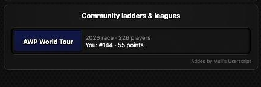

Tidy Up Your Dashboard
A userscript for war.app in a desktop browser: a tidier dashboard, tournament tools, community ladders and leagues, and more.
Install- Install Tampermonkey in Chrome, Edge or Firefox.
- Click Install above and confirm in Tampermonkey.
- Open war.app. Updates arrive by themselves.
What it adds
Dashboard
Press R to refresh. Your-turn count in the tab title. Your-turn games sorted by time left before boot. Open Games filter, "Joined" badges, and badges for community event games.
Tournaments
Search and sort a tournament's players. Bookmark tournaments. A link to the tournament's page on custom.wl-stats.com.
Ladders & community events
AWP World Tour, P/R League, Nations Cup, Clan Cup and more on the Ladders page, with your own place. Standings on Community Events.
Profiles
Your private notes, AWP World Tour stats and community tournament stats on a player's profile.
Clans
Clan list search, and a clan's squads in the current community events on its page.
Forum, mail & more
Bookmarks, a formatting toolbar, hiding threads, mail search by player, block list search, map search.
A look
